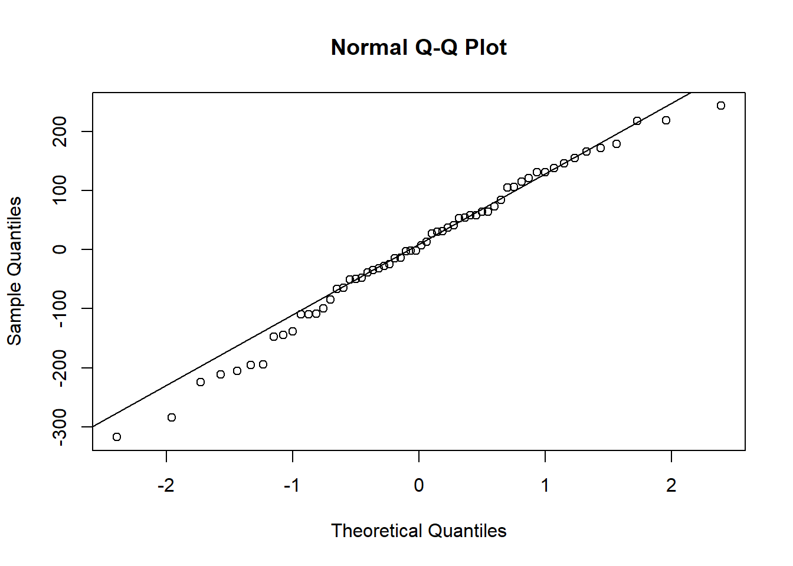

5.3 Section 2
Open the file Drivers.sav.
5.3.1 Research question 1 (ANOVA): Does talking on the phone interfere with people’s driving skills?
IV: condition
- hand-held phone
- hands-free phone
- control
DV: reaction time in milliseconds in a driver simulation test.
5.3.2 Question 2.a
Perform the ANOVA.
Hint: The function aov() is an alternate interface to the linear model (lm), which reports results in line with the convention of ANOVA analyses.
Click for explanation
## Df Sum Sq Mean Sq F value Pr(>F)
## condition 2 103909 51954 3.072 0.0541 .
## Residuals 57 964082 16914
## ---
## Signif. codes: 0 '***' 0.001 '**' 0.01 '*' 0.05 '.' 0.1 ' ' 1<>
5.3.3 Question 2.b
What are the assumptions you need to check?
Click for explanation
We can check several assumptions:
- Presence of outliers
- Normality of residuals
- Homogeneity of residuals
Let’s deal with them in order.
5.3.3.1 Presence of outliers:
In Y-space
We can check the range of the standardized (scale()) residuals for outliers in Y-space. The residuals are inside of the results object, so we can just extract them, standardize them, and get the range:
## [1] -2.483778 1.904491What is your conclusiong about the outliers?
5.3.3.2 Normality of residuals
We can check the normality of residuals using a QQplot.

There appears to be some mild deviation from normality at the extremes.
You can also test for normality with the shapiro.test(x) function:
##
## Shapiro-Wilk normality test
##
## data: results$residuals
## W = 0.98367, p-value = 0.60135.3.3.3 Homogeneity of Variances
The bartlett.test() function provides a parametric K-sample test of the equality of variances. This test has the same hypotheses as the Levene’s test.
##
## Bartlett test of homogeneity of variances
##
## data: RT by condition
## Bartlett's K-squared = 2.7203, df = 2, p-value = 0.2566It can also be nice to use a paneled boxplot to visualize the distributions. For this, we will use ggplot2. This time, we introduce a new command, theme_bw(): A theme for the plot that conforms to APA standards. We can apply this theme to any figure created using ggplot():
 <>
5.3.4 Question 2.c
Explain for each of the assumptions why they are important to check.
5.3.5 Question 2.d
What are your conclusions regarding the assumption checks?
Klik voor meer uitleg
There are no outliers in X-space, no evidence for (severe) deviations from normality of residuals, and no evidence for (severe) heteroscedasticity.5.3.6 Question 2.e
Answer the research question.
Hint: Use summary() and TukeyHSD().
Click for explanation
We can examine the overall F-test, which is significant:
## Df Sum Sq Mean Sq F value Pr(>F)
## condition 2 103909 51954 3.072 0.0541 .
## Residuals 57 964082 16914
## ---
## Signif. codes: 0 '***' 0.001 '**' 0.01 '*' 0.05 '.' 0.1 ' ' 1## Tukey multiple comparisons of means
## 95% family-wise confidence level
##
## Fit: aov(formula = RT ~ condition, data = data)
##
## $condition
## diff lwr upr p adj
## hands-free-hand-held -36.95 -135.917 62.017041 0.6434900
## control-hand-held -100.75 -199.717 -1.782959 0.0451401
## control-hands-free -63.80 -162.767 35.167041 0.2750829Post-hoc tests with Bonferroni correction can be obtained using TukeyHSD(results). We notice that none of these comparisons are significant. However, the research question was Does talking on the phone interfere with peoples driving skills? There are two conditions for talking on the phone. We could thus test a planned contrast of these two conditions against the control condition, instead of all possible post-hoc tests:
The standard contrasts are dummy coded:
## hands-free control
## hand-held 0 0
## hands-free 1 0
## control 0 1We can replace these with planned contrasts for “phone” vs control, and hand-held vs hands-free:
contrasts(data$condition) <- cbind(phoneVcontrol = c(-1, -1, 2), handVfree = c(-1, 1, 0))
results <- aov(RT ~ condition, data)
# Ask for the lm summary, which gives you t-tests for the planned contrasts:
summary.lm(results)##
## Call:
## aov(formula = RT ~ condition, data = data)
##
## Residuals:
## Min 1Q Median 3Q Max
## -317.50 -71.25 2.98 89.55 243.45
##
## Coefficients:
## Estimate Std. Error t value Pr(>|t|)
## (Intercept) 608.60 16.79 36.248 <2e-16 ***
## conditionphoneVcontrol -27.42 11.87 -2.310 0.0245 *
## conditionhandVfree -18.47 20.56 -0.898 0.3727
## ---
## Signif. codes: 0 '***' 0.001 '**' 0.01 '*' 0.05 '.' 0.1 ' ' 1
##
## Residual standard error: 130.1 on 57 degrees of freedom
## Multiple R-squared: 0.09729, Adjusted R-squared: 0.06562
## F-statistic: 3.072 on 2 and 57 DF, p-value: 0.05408<>
5.3.7 Research question 2 (ANCOVA): Are there differences in reaction time between the conditions when controlling for age?
5.3.8 Question 2.f
What are the assumptions you need to check?
Click for explanation
Assumptions for ANCOVA are the same as for ANOVA (no outliers, normality of residuals, homoscedasticity). ANCOVA has the following additional assumptions:
- Homogeneity of regression slopes for the covariate (no interaction between factor variable and covariate)
- The covariate is independent of the treatment effects. I.e. there is no difference in the covariate between the groups of the independent variable.
<>
5.3.9 Question 2.g
Explain for each of the assumptions why they are important to check.
5.3.10 Question 2.h
Check the assumptions of ANCOVA.
Hint: Within formulas, you can use * instead of + to include interaction effects.
Click for explanation
5.3.10.1 Homogeneity of regression slopes
Add the interaction to the model and test whether the interaction is significant:
results_age <- aov(RT ~ condition + age, data)
results_age_int <- aov(RT ~ condition * age, data)
summary(results_age_int)## Df Sum Sq Mean Sq F value Pr(>F)
## condition 2 103909 51954 4.532 0.0151 *
## age 1 320454 320454 27.955 2.3e-06 ***
## condition:age 2 24622 12311 1.074 0.3488
## Residuals 54 619005 11463
## ---
## Signif. codes: 0 '***' 0.001 '**' 0.01 '*' 0.05 '.' 0.1 ' ' 1What would your conclusion be about this assumption?
Click for explanation
The interaction is NOT significant; no evidence for violation of the assumption.
<>
5.3.10.2 The covariate is independent of the treatment effects
## Df Sum Sq Mean Sq F value Pr(>F)
## condition 2 137 68.55 0.659 0.521
## Residuals 57 5926 103.97What would your conclusion be about this assumption?
Click for explanation
The covariate is not significantly related to treatment effect. The assumption is met.
<>
5.3.11 Question 2.i
Answer the research question. (Do you have to include the interaction or not?)
Click for explanation
## Tukey multiple comparisons of means
## 95% family-wise confidence level
##
## Fit: aov(formula = RT ~ condition + age, data = data)
##
## $condition
## diff lwr upr p adj
## hands-free-hand-held -36.95 -118.5708 44.67082 0.5242511
## control-hand-held -100.75 -182.3708 -19.12918 0.0119407
## control-hands-free -63.80 -145.4208 17.82082 0.1533777The handheld-condition has a significant higher reaction time than the control condition
<>